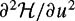

|
| |||||||||||||
|
|
||
In section 11.2, trajectory planning is decoupled into collision-free path planning followed by time scaling. In this section, we study methods for planning the trajectory directly in the state space. If we are interested in finding trajectories that optimize some cost function, such as motion time or expended energy, optimal control theory provides necessary conditions on the trajectories. Unfortunately, these conditions are complex for almost any robot system and cannot be solved analytically. Because of this, we consider two numerical approaches: nonlinear optimization and grid-based search.
First we describe how to transform the optimal control problem to a finite-dimensional parameter optimization problem, allowing nonlinear optimization to be used to numerically solve the optimality conditions. If the problem is well formulated (e.g., the objective and constraint functions are sufficiently smooth), nonlinear optimization may result in rapid convergence to a locally optimal trajectory. The drawbacks of this approach are that the method requires an initial guess (possibly provided by a grid-based search method), and the locally optimal solution reached generally depends heavily on this guess. Also, evaluation of constraint and objective functions, and their gradients, may be computationally costly.
We then introduce a grid-based search method that allows the user to specify how near to time-optimal the motion plan should be, while meeting "safety" requirements on obstacle avoidance. The planned motions are approximate in that the goal state may not be exactly reached, but the user has control over how large the final error can be. An advantage is that this is a global approach, unlike gradient-based nonlinear optimization. A drawback of grid-based search is that the size of the grid grows exponentially in the dimension of the state space, making the approach impractical for high-dimensional systems.
A third approach is to use RRT's, as described in chapter 7. This approach trades off optimality for planner run-time-it may be able to quickly find a feasible trajectory that is in no sense optimal.
Finally, a fourth approach is based on artificial potential fields (see chapter 4). An artificial potential field is constructed to make obstacles repulsive and the goal configuration attractive. The robot senses its current configuration, calculates the gradient of the artificial potential at this configuration, and applies the gradient forces at the actuators. (Damping forces may be included to stabilize the goal configuration.) A potential field, therefore, implicitly defines a trajectory to the goal from all initial states. This approach is fundamentally different from the previous "open-loop" approaches in that a feedback law is specified for all robot states.
Given a dynamic system
we would like to find a solution (q(t), u(t)), t ∊ [0, tf ]to equation (11.23) that avoids obstacles and joint limits, respects actuator limits, and takes the system from the initial state at time t = 0 to the final state at time t = tf. Of all the trajectories that accomplish this, we might want to find one that minimizes some objective function J. In general, J might be a function of the controls, the trajectory, and the total motion time tf, i.e., J = J(u(t), q(t), tf).
Before proceeding further, let's express the state of the system as and rewrite the equations of motion in the general form
where f is the vector differential equation describing the kinematics and dynamics of the system. In our case, the state equations do not change with time, so f (x, u, t) = f (x, u). The state equations (11.24) can be viewed as constraints defining the relationship between x(t) and u(t). Let the objective function J be written
where the integrand is called the Lagrangian. (The Lagrangian for optimal control is actually a generalization of the Lagrangian L for dynamics.) A typical choice of is "effort," modeled as a quadratic function of the control, e.g., , where W is a positive definite weighting matrix, e.g., the identity matrix. Another common choice is to leave tf free and choose , implying J = tf, a minimum-time problem.
For now, let us ignore the issues of actuator limits and obstacles, and assume that the final time tf is fixed. The problem then is to find a state and control history (x(t), u(t)), t ∊ [0, tf] that satisfies the constraints of equation (11.24), satisfies the terminal conditions x(tf) = xf, and minimizes the cost in equation (11.25). To write a necessary condition for optimality, we define the Hamiltonian
| (11.26) |
|
where λ(t) is a vector of Lagrange multipliers.[4] Then the Pontryagin minimum principle[5] says that at an optimal solution (x*(t), u*(t), λ*(t)),
In other words, if the control history u*(t) is optimal, then at any time t,any other feasible control u(t) will give an greater than or equal to that of the optimal . In the absence of any other constraints on the state and control, then, a necessary
condition for optimality can be written
This says that the linear sensitivity of the Hamiltonian to changes in u is zero, meaning that the control is extremal, but not necessarily optimal. A sufficient condition for local optimality of a solution is that equation (11.28) is satisfied and the Hessian of the Hamiltonian is positive definite along the trajectory of the solution:
| (11.29) |
|
This is known as the convexity or Legendre-Clebsch condition. The Lagrange multipliers evolve according to the adjoint equation
Equation (11.28) can sometimes be used to write u as a function of x and λ. In this case, optimization boils down to choosing initial conditions for equation (11.30) to ensure that the goal is reached.
Consider a simple double-integrator system with one degree of freedom, , such as a point mass on a line actuated by a force. , so the equations of motion can be written in the form
Choose the objective function
Then the Hamiltonian is
and the necessary condition (11.28) is written
The adjoint equation (11.30) is written
Equation (11.32) shows that λ1 is constant and λ2 is a linear function of time, so by equation (11.31), u is also a linear function of time, e.g., u(t) = c0 + c1t.
Now we can specify the initial and final state for the system to solve for the control and state history. Let x(0) = [0, 0]T and x(tf) = [d, 0]T, i.e., the system starts at rest and ends at rest having moved a distance d in time tf. Then we have the stopping conditions that the first and second integral of u(t) evaluated over [0, tf] be zero and d, respectively:
Solving, we get c0 = 6d/t2f, c1 =−12d/t3f defining the extremal control history. The extremal state history is obtained by integration of the control.
To check if this extremal solution is a minimizer, we can use the convexity condition. In this case, the Hessian is the scalar , indicating that the solution is indeed (locally) optimal.
In the previous example, the convexity condition is satisfied. However, if an extremum is achieved but convexity is not is only positive semidefinite), it does not mean that the control is not optimal. In this case, auxiliary conditions have to be satisfied to ensure optimality. An optimal control of this type is an example of a singular optimal control, as in the previous section with time-optimal control at zero inertia points.
What if there are actuator limits or obstacles? At an optimal solution, the minimum principle (11.27) will always be satisfied, but the control or state history may bump up against limits preventing equation (11.28) from being satisfied. The optimal solution may be constrained by these limits rather than the extremality condition (11.28). Consider the one-degree-of-freedom double integrator above, with the actuator limits |u|<umax, and choose the minimum-time objective function
where the time tf is left free. The Hamiltonian is , and does not contain the control variable. Therefore, it provides no information on the choice of u(t). Further,  is zero, so is not convex. We know, however, that the optimal solution for this problem is a bang-bang trajectory, just like the bang-bang trajectories found by the time-scaling algorithm.
We can recover the bang-bang solution using the minimum principle (11.27). We write
Therefore, u*(t) is the maximum feasible value umax when λ*2(t) < 0 and the minimum feasible value −umax when λ*2(t) > 0. As before, λ2 is a linear function of time, and the terminal state conditions allow us to find the complete solution.
Only for very simple systems is it possible to solve the extremality conditions analytically. In most cases it is necessary to resort to numerical methods to solve the conditions approximately. One such method is called shooting. The user guesses initial values for the Lagrange multipliers λ(0), which then are numerically integrated according to the adjoint equation , while the control vector u evolves according to . After integrating for time tf (for fixed-time problems), if the final state is not equal to the desired final state, the initial guess of the Lagrange multipliers is modified in some reasonable way and the process repeats. In other words, by modifying the initial conditions, we "shoot" at the goal until we hit it. Typically the initial conditions are modified using an approximation of the gradient of the map taking the initial conditions to the final state.
Other numerical methods for approximately solving for optimal controls include dynamic programming and gradient-based nonlinear optimization. In the next subsection we discuss a nonlinear optimization approach to finding the optimal parameters of a finite parameterization of the system's trajectory or controls. In subsection 11.3.3 we introduce a grid-based search method for finding near-time-optimal trajectories.
For more on optimal control, see the books by Bryson and Ho [72], Bryson [71], Kirk [236], Lewis and Syrmos [287], Stengel [396], and Pontryagin, Boltyanskii, Gamkrelidze, and Mishchenko [354].
The general problem can be stated
| (11.33) |
|
| (11.34) |
|
| (11.38) |
|
| (11.39) |
|
where h(q) ≤ 0 are configuration inequality constraints representing obstacles and joint limits.
To approximately solve this problem by nonlinear optimization, we approximate the continuous constraints (11.36) and (11.37) by a finite number of constraints. This is typically done by ensuring that the constraints are satisfied at a fixed number of points distributed evenly over the interval [0, tf]. We also choose a finite-parameter representation of the state and control histories. We have three choices of how to do this:
Parameterize the trajectory q(t). In this case, we solve for the parameterized trajectory directly. The control forces u at any time are calculated using equation (11.35).
Parameterize the control u(t). We solve for u(t) directly, and calculating the state requires integrating the equations of motion (11.35).
Parameterize both q(t) and u(t). We have a larger number of variables, since we are parameterizing both q(t) and u(t). Also, we have a larger number of constraints, as q(t) and u(t) must satisfy the dynamic equations (11.35) explicitly, typically at a fixed number of points distributed evenly over the interval [0, tf ]. We must be careful to choose the parameterizations of q(t) and u(t)tobe consistent with each other, so that the dynamic equations can be satisfied at these points.
A trajectory or control history can be parameterized in any number of ways. The parameters can be the coefficients of a polynomial in time, the coefficients of a truncated Fourier series, spline coefficients, wavelet coefficients, piecewise constant acceleration or force segments, etc. For example, the control ui (t) couldberepresented by p + 1 coefficients aj of a polynomial in time:
In addition to the parameters for the state or control history, the total time tf may be another control parameter. The choice of parameterization has implications for the efficiency of the calculation of q(t) and u(t) at a given time t. The choice of parameterization also determines the sensitivity of the state and control to the parameters, and whether each parameter affects the profiles at all times [0, tf ]or just on a finite-time support base. These are important factors in the stability and efficiency of the numerical optimization.
Let X be the vector of the control parameters to be solved. Assuming that either q(t) or u(t) has been parameterized (but not both), and that the k + 1 constraint checks are spaced at Δt = tf/k intervals, the constrained nonlinear optimization can be written find X
| (11.40) |
|
| (11.41) |
|
| (11.43) |
|
| (11.44) |
|
Avariant of this formulation approximately represents the constraints (11.42)-(11.45) by penalty functions in the objective function, allowing the use of unconstrained optimization.
A nonlinear program of this type can be solved by a number of methods, including sequential quadratic programming (SQP). Any solver will require the user to provide functions to take a guess X and calculate the objective function J ( X) and the constraints (11.42)-(11.45). Often the objective function will have to be calculated by numerical integration. All solvers also need the gradients of the objective function and the constraints with respect to X. These can be calculated numerically by finite differences, or, if possible, analytically. Finally, most solvers make use of Hessians of the objective function and constraint functions with respect to X. Most solvers update a numerical approximation to these Hessians rather than requesting the user to provide these. Details on different methods for nonlinear optimization can be found in [164, 326, 338]. Code for nonlinear optimization includes FSQP and CFSQP [4], NPSOL [5], and routines in the IMSL [6], NAG [7], and MATLAB Optimization Toolbox libraries.
The most important point is that for any of these solvers to work, the objective and constraints must be sufficiently smooth with respect to the control parameters X. They must be at least C1,but usually C2 so that Hessian information can be used to speed convergence. A key part of the problem formulation is ensuring this smoothness. When possible, the gradients, and even the Hessians, should be calculated analytically. This will minimize the possibility of the solver failing to converge due to numerical problems, a very real practical concern! Even if the objective function is calculated approximately by numerical integration, it may be possible to calculate the exact gradient of this approximation analytically.
Since nonlinear optimization uses local gradient information, it will converge to a locally optimal solution. For some problems, the control parameter space will be littered with many local optima. Therefore, the solution achieved will depend heavily on the initial guess. To ensure a good solution, the process can be started from several initial guesses, keeping the best local optimum. Nonlinear optimization can also be used as a final step to locally improve a trajectory found by some other global search method. A survey of nonlinear optimization methods for trajectory generation can be found in [49].
An alternative approach, specifically for time-optimal trajectory planning, uses grid search. As motivation, consider the simple double-integrator system
where a is the acceleration control. Let q be one-dimensional, so the system can be viewed as a point mass moving on a line with a control force. The time-optimal control from an initial state to a goal state is bang-bang-the actuator is saturated at all times.
Things will not be so simple when we deal with multidimensional problems with obstacles and velocity limits, so let's consider a grid-based approach that we will be able to generalize to more dimensions. First, we discretize the control set to {−amax, 0, amax}. Next, we choose a timestep h. Now, beginning from , we integrate the three controls forward in time by h to obtain three new states. Think of the initial state as the root of a tree, and the three new states as children of the root (figure 11.8). From each of these three, we integrate the controls forward to obtain anew level of the tree. We continue in a breadth-first fashion. If the trajectory to a new node in the tree passes through an obstacle or exceeds a velocity limit, this node is pruned from the tree. The search continues until a trajectory reaches a state in a specified goal region. The trajectory is specified by the piecewise-constant controls to traverse the tree from the root node to this final node. Since the search is breadth-first, exploring all reachable states at time kh before moving on to time (k + 1)h, the trajectory is time-optimal for the chosen discretization of time and controls.
We call this a grid-based search because each of the nodes reached during the growth of the tree lies on a regular grid on the  state space. From any state, the new state obtained by integrating one of the discretized accelerations for time h will involve a change in
state space. From any state, the new state obtained by integrating one of the discretized accelerations for time h will involve a change in  equal to an integral multiple of amaxh and a change in q equal to an integral multiple of . An example of such a grid is shown in figure 11.9. The search tree shown on this grid is two levels deep, beginning at (0, 0). The key point here is that, given some bounds on q and , the size of the grid is easily computed, so an upper bound on the computational complexity of the search of this grid is also easily computed.
equal to an integral multiple of amaxh and a change in q equal to an integral multiple of . An example of such a grid is shown in figure 11.9. The search tree shown on this grid is two levels deep, beginning at (0, 0). The key point here is that, given some bounds on q and , the size of the grid is easily computed, so an upper bound on the computational complexity of the search of this grid is also easily computed.
Let us now consider a more general problem statement. The system is described by , where D is a bounded subset of , and velocity and acceleration bounds of the form
Note that this is a very limited class of systems, as the maximum feasible . are constant and independent of the state . An example of such a system might be a point in -dimensional Euclidean space with a thruster for each degree of freedom, or a Cartesian robot arm consisting of all prismatic joints and actuators with state-independent bounds. The problem is to find a collision-free, approximately time-optimal trajectory from [at or near the desired start state to a goal state near the desired goal state
The algorithm uses a discretized control set A consisting of the cross products of {−amax,0, amax} for each degree of freedom, yielding distinct controls (figure 11.10). These controls result in a regular grid on dimensional state space, similar to figure 11.9. Algorithm 21, GRID SEARCH, is described in pseudocode below.
This algorithm is straightforward, except for one twist: the algorithm prunes a node if the trajectory passes close to an obstacle, not just if it passes through an obstacle. Thus the algorithm will only return trajectories that are safe. We define a trajectory to be δv(c0, c1)-safe if there exists a speed-dependent ball of free configurations about each q in the trajectory, where the radius of the ball is . The parameters c0 and c1 are safety parameters.
Since the algorithm uses a finite timestep h,any trajectory it finds will only be an approximately time-optimal safe trajectory. Instead of directly choosing h, the user could have control over a parameter ε, 0 < ε < 1, which defines the crudeness of the approximation. Larger values of ε correspond to cruder approximations, and the timestep h goes to zero as ε goes to zero. As we will see, ε may be viewed as a measure of how much we will allow δv(c0, c1)-safety to be violated, giving (1 − ε)δv(c0, c1)-safety.
Input: Start node , goal region Output: A trajectory toor FAILURE 1: Place at root of tree T (level 0) 2: level ← 0, solved ← FALSE, ANS ← 3: while not solved do 4: if no nodes in level level of T then 5: return FAILURE 6: end if 7: for each node in level level of T do 8: for each control in A do 9: Integrate control for time h from node, getting newnode 10: if newnode has not been previously reached, and trajectory does not pass close to an obstacle nor exceed ∊max then 11: add newnode to T as child of node 12: end if 13: if trajectory enters
then 14: solved ← 15: end if 16: end for 17: end for 18: level ← level + 1 19: end while 20: For each node in ANS, find the trajectory that reaches first
Although the algorithm itself is straightforward, analysis of the algorithm is quite involved. Given a desired safety margin and ε,wewould like to know how to choose h to guarantee completeness of the algorithm, and how ε and the safety margin relate to the algorithm's running time. This is the problem that was studied in detail by Donald and Xavier [135], building on work by Canny, Donald, Reif, and Xavier [94, 133]. Their analysis holds for a point robot with or 3 moving among polygonal or polyhedral obstacles. They give us the following result.
Let ℓ be the diameter of the robot configuration space, c0 and c1 be safety parameters, and ∊max and amax be the velocity and acceleration limits. Let 0 < ε < 1. Assume there exists a δv(c0, c1)-safe trajectory from to taking time Topt by some control function with for all i and t ε [O, Topt]. Choose the largest h so that
and ∊max is an integral multiple of amaxh. Choose an approximate starting state where, for each coordinate i,
Define the goal neighborhood to be all points within of [Note that the distance from to  , and the distance from any point in the goal neighborhood to , is O(ε).] Then the algorithm outlined above is guaranteed to find a (1 − ε)δv(c0, c1)-safe trajectory taking at most time Topt from to the goal neighborhood. The running time of the algorithm is
, and the distance from any point in the goal neighborhood to , is O(ε).] Then the algorithm outlined above is guaranteed to find a (1 − ε)δv(c0, c1)-safe trajectory taking at most time Topt from to the goal neighborhood. The running time of the algorithm is
where nQ = 2 or 3,c is a constant, and N is the number of faces in the obstacles. In terms of the dimension and the approximation variable ε, the running time goes as , i.e., polynomial in ε and exponential in .
The proof of this theorem is beyond the scope of this chapter, and it depends on efficient goal and safety checking between grid vertices. One important property of the algorithm is that the (1 − ε)δv(c0, c1)-safe trajectory found by the algorithm may be quite different from the time-optimal δv(c0, c1)-safe trajectory. The only guarantee is that the running time of the approximate trajectory will be no greater than Topt, the time for a time-optimal δv(c0, c1)-safe trajectory.
Figure 11.11 shows a cartoon example of different kinds of optimal paths for a point in the plane. The true time-optimal trajectory, with no consideration for safety, is a straight-line motion between the start and the goal. In this example, the time-optimal δv(c0, c1)-safe trajectory avoids the narrow passage, as it would require unacceptably slow speeds to be safe. Finally, the algorithm outlined above finds the approximately time-optimal (1 − ε)δv(c0, c1)-safe trajectory from an approximate start state to an approximate goal state.
We would like to generalize the grid-search algorithm to handle more general dynamic systems of the form of equation (10.7), such as open-chain robot manipulators. Unlike the previous case, the dynamics are not decoupled generally, and the current state of the system affects the feasible
To simplify matters somewhat, we will assume constant bounds on the available controls, possibly different for each i:
At a given state , equation (11.46) transforms the rectangular parallelepiped of feasible controls u implied by the constraints (11.47) to a parallelepiped in the space, as shown in figure 11.12. Let A denote the state-dependent parallelepiped of feasible . We assume that A(q,0) contains the origin of the space in its interior for all , i.e., the actuators are strong enough to hold the robot stationary at any configuration.
To apply the algorithm from before, imagine placing a constant grid on the space, as shown in figure 11.12, discretizing the feasible accelerations. For a fixed time interval h, these controls will again create a regular grid of reachable points on the state space. For the current state, we use the  grid points inside as our set of actions A. One problem is that changes during the time interval h, so that a that is feasible at the beginning of the timestep may no longer be feasible at the end. Another problem is that it might happen that there is no grid point that is feasible at both the beginning and end of the timestep. Worse yet, if M−1(q) ever loses rank, then collapses to zero volume, and no point on a fixed grid is likely to lie in it.
grid points inside as our set of actions A. One problem is that changes during the time interval h, so that a that is feasible at the beginning of the timestep may no longer be feasible at the end. Another problem is that it might happen that there is no grid point that is feasible at both the beginning and end of the timestep. Worse yet, if M−1(q) ever loses rank, then collapses to zero volume, and no point on a fixed grid is likely to lie in it.
To prevent from collapsing, we assume an upper bound on the largest eigen-value of M(q) during any motion. This tells us how "skinny" can become, providing information on how to choose the grid spacing so that there are always grid points inside the region. For a given timestep h, we also have to choose a conservative approximation such that any  inside stays inside for all δt ε [0, h] (figure 11.13). To construct the conservative approximation , we need to know how quickly M(q) can change, which can be bounded by global bounds on the derivatives of M(q) with respect to time. In other words, properties of M(q) and its derivatives must be used to avoid the problems outlined in the previous paragraph. Details can be found in [186].
inside stays inside for all δt ε [0, h] (figure 11.13). To construct the conservative approximation , we need to know how quickly M(q) can change, which can be bounded by global bounds on the derivatives of M(q) with respect to time. In other words, properties of M(q) and its derivatives must be used to avoid the problems outlined in the previous paragraph. Details can be found in [186].
The idea is to choose the grid spacing (which may be different for each and the timestep h so that any feasible trajectory of the system using the full acceleration capabilities can be approximately tracked by trajectories using the discretized controls A, chosen to be the  grid points lying inside .[6] The allowable tracking error depends on a user-defined approximation parameter ε, 0 <ε< 1, where the allowable tracking error goes to zero as ε goes to zero.
grid points lying inside .[6] The allowable tracking error depends on a user-defined approximation parameter ε, 0 <ε< 1, where the allowable tracking error goes to zero as ε goes to zero.
As before, we can define a trajectory to be δv(c0, c1)-safe if all real-space obstacles are avoided by a distance of at least at all points along the trajectory. It has been shown that if there exists a δv(c0, c1)-safe trajectory from to taking time Topt, then the procedure GRID SEARCH outlined in algorithm 21 will find a (1 − ε)δv(c0, c1)-safe trajectory from to [where the errors from the desired initial and final states are O(ε)] taking no more than time (1 + ε)Topt. The timestep h and grid-spacing are polynomial in ε, and the choice of these parameters involves lengthy calculations. The running time of the algorithm has been shown to be polynomial in ε and exponential in the degrees of freedom [134,185,205,206].
The grid-search algorithm is attractive because it is possible to prove its completeness (using the concept of safe trajectories) and to understand how the running time depends on an approximation parameter ε. This allows the user to trade off computation time against the quality of the trajectory. There have been no implementations of the algorithm for more than a few degrees of freedom, however, because in practice the computation time and memory requirements grow quickly with the number of degrees of freedom.
The running time of the algorithm can be improved by using nonuniform discretization of the state space [362] or search heuristics that favor first exploring from nodes close to the goal state. The RRT and EST (see chapter 7) are methods for trajectory planning based on a heuristic that biases the search to evenly explore the state space. Like the grid-based algorithm, they discretize the controls and choose a constant, finite timestep. Unlike the grid-based algorithm, they give up on any notion of optimality and settle for probabilistic completeness, attempting to quickly find any feasible trajectory.
[4]These Lagrange multipliers play a similar role to those in dynamics with constraints-they are used to enforce constraints, here the state equation constraints.
[5]Often known as the Pontryagin maximum principle. In our case, we are minimizing a cost function; we could equivalently maximize a utility function, or the negative of the cost function.
[6]Alternatively, A could consist only of grid points near the boundary of .
|
|
||
|